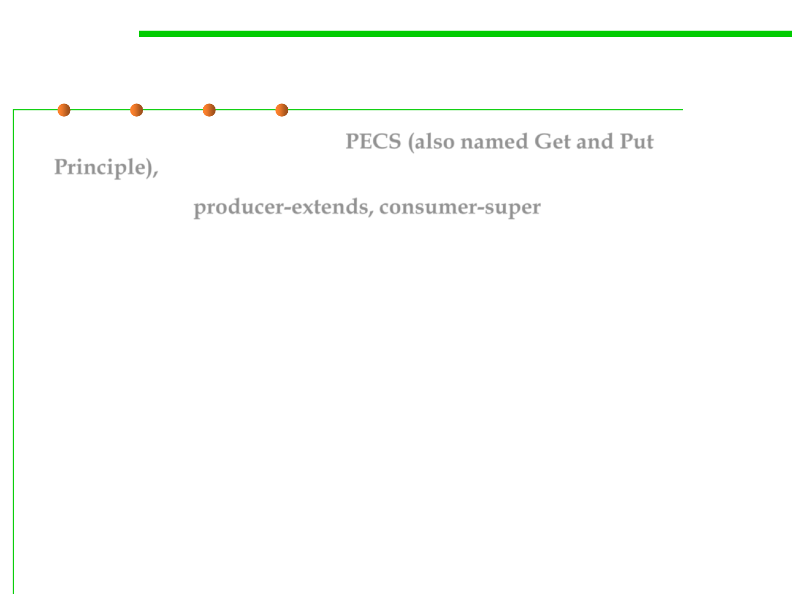

PECS
5.2 Construction for Reuse
▪ Here is a mnemonic(记忆术), PECS (also named Get and Put
Principle), to help remember which wildcard type to use:
producer-extends, consumer-super
▪ The lesson is clear. For maximum flexibility, use wildcard types on
input parameters that represent producers or consumers.
– If a parameterized type represents a T producer, use<? extends T>, e.g., get()
– If a parameterized type represents a T consumer, use<? super T>, e.g., add()